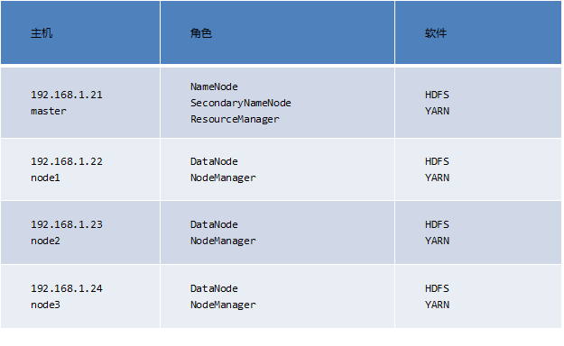
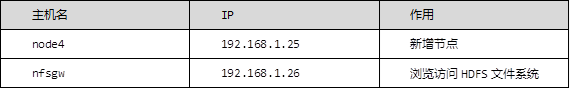

本案例要求：
在day05准备好的环境下给master （nn01）主机添加ResourceManager的角色，在node1，node2，node3上面添加NodeManager的角色，如表-1所示：
表-1
实现此案例需要按照如下步骤进行。
步骤一：安装与部署hadoop
1）配置mapred-site（nn01上面操作）
- [root@nn01 ~]# cd /usr/local/hadoop/etc/hadoop/
- [root@nn01 hadoop]# mv mapred-site.xml.template mapred-site.xml
- [root@nn01 hadoop]# vim mapred-site.xml
- <configuration>
- <property>
- <name>mapreduce.framework.name</name>
- <value>yarn</value>
- </property>
- </configuration>
2）配置yarn-site（nn01上面操作）
- [root@nn01 hadoop]# vim yarn-site.xml
- <configuration>
- <!-- Site specific YARN configuration properties -->
- <property>
- <name>yarn.resourcemanager.hostname</name>
- <value>nn01</value>
- </property>
- <property>
- <name>yarn.nodemanager.aux-services</name>
- <value>mapreduce_shuffle</value>
- </property>
- </configuration>
3）同步配置（nn01上面操作）
- [root@nn01 hadoop]# for i in {22..24}; do rsync -aSH --delete /usr/local/hadoop/ 192.168.1.$i:/usr/local/hadoop/ -e 'ssh' & done
- [1] 712
- [2] 713
- [3] 714
4）验证配置（nn01上面操作）
- [root@nn01 hadoop]# cd /usr/local/hadoop
- [root@nn01 hadoop]# ./sbin/start-dfs.sh
- Starting namenodes on [nn01]
- nn01: namenode running as process 23408. Stop it first.
- node1: datanode running as process 22409. Stop it first.
- node2: datanode running as process 22367. Stop it first.
- node3: datanode running as process 22356. Stop it first.
- Starting secondary namenodes [nn01]
- nn01: secondarynamenode running as process 23591. Stop it first.
- [root@nn01 hadoop]# ./sbin/start-yarn.sh
- starting yarn daemons
- starting resourcemanager, logging to /usr/local/hadoop/logs/yarn-root-resourcemanager-nn01.out
- node2: starting nodemanager, logging to /usr/local/hadoop/logs/yarn-root-nodemanager-node2.out
- node3: starting nodemanager, logging to /usr/local/hadoop/logs/yarn-root-nodemanager-node3.out
- node1: starting nodemanager, logging to /usr/local/hadoop/logs/yarn-root-nodemanager-node1.out
- [root@nn01 hadoop]# jps //nn01查看有ResourceManager
- 23408 NameNode
- 1043 ResourceManager
- 1302 Jps
- 23591 SecondaryNameNode
- [root@nn01 hadoop]# ssh node1 jps //node1查看有NodeManager
- 25777 Jps
- 22409 DataNode
- 25673 NodeManager
- [root@nn01 hadoop]# ssh node2 jps //node1查看有NodeManager
- 25729 Jps
- 25625 NodeManager
- 22367 DataNode
- [root@nn01 hadoop]# ssh node3 jps //node1查看有NodeManager
- 22356 DataNode
- 25620 NodeManager
- 25724 Jps
5）web访问hadoop
- http://192.168.1.21:50070/ //--namenode web页面（nn01）
- http://192.168.1.21:50090/ //--secondory namenode web页面（nn01）
- http://192.168.1.22:50075/ //--datanode web页面（node1,node2,node3）
- http://192.168.1.21:8088/ //--resourcemanager web页面（nn01）
- http://192.168.1.22:8042/ //--nodemanager web页面（node1,node2,node3）
本案例要求：
实现此案例需要按照如下步骤进行。
步骤一：词频统计
- [root@nn01 hadoop]# ./bin/hadoop fs -ls / //查看集群文件系统的根，没有内容
- [root@nn01 hadoop]# ./bin/hadoop fs -mkdir /aaa
- //在集群文件系统下创建aaa目录
- [root@nn01 hadoop]# ./bin/hadoop fs -ls / //再次查看，有刚创建的aaa目录
- Found 1 items
- drwxr-xr-x - root supergroup 0 2018-09-10 09:56 /aaa
- [root@nn01 hadoop]# ./bin/hadoop fs -touchz /fa //在集群文件系统下创建fa文件
- [root@nn01 hadoop]# ./bin/hadoop fs -put *.txt /aaa
- //上传*.txt到集群文件系统下的aaa目录
- [root@nn01 hadoop]# ./bin/hadoop fs -ls /aaa //查看
- Found 3 items
- -rw-r--r-- 2 root supergroup 86424 2018-09-10 09:58 /aaa/LICENSE.txt
- -rw-r--r-- 2 root supergroup 14978 2018-09-10 09:58 /aaa/NOTICE.txt
- -rw-r--r-- 2 root supergroup 1366 2018-09-10 09:58 /aaa/README.txt
- [root@nn01 hadoop]# ./bin/hadoop fs -get /aaa //下载集群文件系统的aaa目录
- [root@nn01 hadoop]# ./bin/hadoop jar \
- share/hadoop/mapreduce/hadoop-mapreduce-examples-2.7.6.jar wordcount /aaa /bbb //hadoop集群分析大数据，hadoop集群/aaa里的数据存到hadoop集群/bbb下
- [root@nn01 hadoop]# ./bin/hadoop fs -cat /bbb/* //查看集群里的数据
本案例要求：
另外准备两台主机，node4和nfsgw，作为新添加的节点和网关，具体要求如表-2所示：
表-2
实现此案例需要按照如下步骤进行。
步骤一：增加节点
1）增加一个新的节点node4
- [root@hadoop5 ~]# echo node4 > /etc/hostname //更改主机名为node4
- [root@hadoop5 ~]# hostname node4
- [root@node4 ~]# yum -y install rsync
- [root@node4 ~]# yum -y install java-1.8.0-openjdk-devel
- [root@node4 ~]# mkdir /var/hadoop
- [root@nn01 .ssh]# ssh-copy-id 192.168.1.25
- [root@nn01 .ssh]# vim /etc/hosts
- 192.168.1.21 nn01
- 192.168.1.22 node1
- 192.168.1.23 node2
- 192.168.1.24 node3
- 192.168.1.25 node4
- [root@nn01 .ssh]# scp /etc/hosts 192.168.1.25:/etc/
- [root@nn01 ~]# cd /usr/local/hadoop/
- [root@nn01 hadoop]# vim ./etc/hadoop/slaves
- node1
- node2
- node3
- node4
- [root@nn01 hadoop]# for i in {22..25}; do rsync -aSH --delete /usr/local/hadoop/
- \ 192.168.1.$i:/usr/local/hadoop/ -e 'ssh' & done //同步配置
- [1] 1841
- [2] 1842
- [3] 1843
- [4] 1844
- [root@node4 hadoop]# ./sbin/hadoop-daemon.sh start datanode //启动
2）查看状态
- [root@node4 hadoop]# jps
- 24439 Jps
- 24351 DataNode
3）设置同步带宽
- [root@node4 hadoop]# ./bin/hdfs dfsadmin -setBalancerBandwidth 60000000
- Balancer bandwidth is set to 60000000
- [root@node4 hadoop]# ./sbin/start-balancer.sh
4）删除节点
- [root@nn01 hadoop]# vim /usr/local/hadoop/etc/hadoop/slaves
- //去掉之前添加的node4
- node1
- node2
- node3
- [root@nn01 hadoop]# vim /usr/local/hadoop/etc/hadoop/hdfs-site.xml
- //在此配置文件里面加入下面四行
- <property>
- <name>dfs.hosts.exclude</name>
- <value>/usr/local/hadoop/etc/hadoop/exclude</value>
- </property>
- [root@nn01 hadoop]# vim /usr/local/hadoop/etc/hadoop/exclude
- node4
5）导出数据
- [root@nn01 hadoop]# ./bin/hdfs dfsadmin -refreshNodes
- Refresh nodes successful
- [root@nn01 hadoop]# ./bin/hdfs dfsadmin -report //查看node4显示Decommissioned
- Dead datanodes (1):
- Name: 192.168.1.25:50010 (node4)
- Hostname: node4
- Decommission Status : Decommissioned
- Configured Capacity: 17168314368 (15.99 GB)
- DFS Used: 12288 (12 KB)
- Non DFS Used: 1656664064 (1.54 GB)
- DFS Remaining: 15511638016 (14.45 GB)
- DFS Used%: 0.00%
- DFS Remaining%: 90.35%
- Configured Cache Capacity: 0 (0 B)
- Cache Used: 0 (0 B)
- Cache Remaining: 0 (0 B)
- Cache Used%: 100.00%
- Cache Remaining%: 0.00%
- Xceivers: 1
- Last contact: Mon Sep 10 10:59:58 CST 2018
- [root@node4 hadoop]# ./sbin/hadoop-daemon.sh stop datanode //停止datanode
- stopping datanode
- [root@node4 hadoop]# ./sbin/yarn-daemon.sh start nodemanager
- //yarn 增加 nodemanager
- [root@node4 hadoop]# ./sbin/yarn-daemon.sh stop nodemanager //停止nodemanager
- stopping nodemanager
- [root@node4 hadoop]# ./bin/yarn node -list
- //yarn 查看节点状态，还是有node4节点，要过一段时间才会消失
- 18/09/10 11:04:50 INFO client.RMProxy: Connecting to ResourceManager at nn01/192.168.1.21:8032
- Total Nodes:4
- Node-Id Node-State Node-Http-Address Number-of-Running-Containers
- node3:34628 RUNNING node3:8042 0
- node2:36300 RUNNING node2:8042 0
- node4:42459 RUNNING node4:8042 0
- node1:39196 RUNNING node1:8042 0
本案例要求：
实现此案例需要按照如下步骤进行。
步骤一：基础准备
1）更改主机名，配置/etc/hosts（/etc/hosts在nn01和nfsgw上面配置）
- [root@localhost ~]# echo nfsgw > /etc/hostname
- [root@localhost ~]# hostname nfsgw
- [root@nn01 hadoop]# vim /etc/hosts
- 192.168.1.21 nn01
- 192.168.1.22 node1
- 192.168.1.23 node2
- 192.168.1.24 node3
- 192.168.1.25 node4
- 192.168.1.26 nfsgw
2）创建代理用户（nn01和nfsgw上面操作），以nn01为例子
- [root@nn01 hadoop]# groupadd -g 200 nfs
- [root@nn01 hadoop]# useradd -u 200 -g nfs nfs
3）配置core-site.xml
- [root@nn01 hadoop]# ./sbin/stop-all.sh //停止所有服务
- This script is Deprecated. Instead use stop-dfs.sh and stop-yarn.sh
- Stopping namenodes on [nn01]
- nn01: stopping namenode
- node2: stopping datanode
- node4: no datanode to stop
- node3: stopping datanode
- node1: stopping datanode
- Stopping secondary namenodes [nn01]
- nn01: stopping secondarynamenode
- stopping yarn daemons
- stopping resourcemanager
- node2: stopping nodemanager
- node3: stopping nodemanager
- node4: no nodemanager to stop
- node1: stopping nodemanager
- ...
- [root@nn01 hadoop]# cd etc/hadoop
- [root@nn01 hadoop]# >exclude
- [root@nn01 hadoop]# vim core-site.xml
- <property>
- <name>hadoop.proxyuser.nfs.groups</name>
- <value>*</value>
- </property>
- <property>
- <name>hadoop.proxyuser.nfs.hosts</name>
- <value>*</value>
- </property>
4）同步配置到node1，node2，node3
- [root@nn01 hadoop]# for i in {22..24}; do rsync -aSH --delete /usr/local/hadoop/ 192.168.1.$i:/usr/local/hadoop/ -e 'ssh' & done
- [4] 2722
- [5] 2723
- [6] 2724
5）启动集群
- [root@nn01 hadoop]# /usr/local/hadoop/sbin/start-dfs.sh
6）查看状态
- [root@nn01 hadoop]# /usr/local/hadoop/bin/hdfs dfsadmin -report
步骤二：NFSGW配置
1）安装java-1.8.0-openjdk-devel和rsync
- [root@nfsgw ~]# yum -y install java-1.8.0-openjdk-devel
- [root@nfsgw ~]# yum -y install rsync
- [root@nn01 hadoop]# rsync -avSH --delete \
- /usr/local/hadoop/ 192.168.1.26:/usr/local/hadoop/ -e 'ssh'
2）创建数据根目录 /var/hadoop（在NFSGW主机上面操作）
- [root@nfsgw ~]# mkdir /var/hadoop
3）创建转储目录，并给用户nfs 赋权
- [root@nfsgw ~]# mkdir /var/nfstmp
- [root@nfsgw ~]# chown nfs:nfs /var/nfstmp
4）给/usr/local/hadoop/logs赋权（在NFSGW主机上面操作）
- [root@nfsgw ~]# setfacl -m u:nfs:rwx /usr/local/hadoop/logs
- [root@nfsgw ~]# vim /usr/local/hadoop/etc/hadoop/hdfs-site.xml
- <property>
- <name>nfs.exports.allowed.hosts</name>
- <value>* rw</value>
- </property>
- <property>
- <name>nfs.dump.dir</name>
- <value>/var/nfstmp</value>
- </property>
5）可以创建和删除即可
- [root@nfsgw ~]# su - nfs
- [nfs@nfsgw ~]$ cd /var/nfstmp/
- [nfs@nfsgw nfstmp]$ touch 1
- [nfs@nfsgw nfstmp]$ ls
- 1
- [nfs@nfsgw nfstmp]$ rm -rf 1
- [nfs@nfsgw nfstmp]$ ls
- [nfs@nfsgw nfstmp]$ cd /usr/local/hadoop/logs/
- [nfs@nfsgw logs]$ touch 1
- [nfs@nfsgw logs]$ ls
- 1 hadoop-root-secondarynamenode-nn01.log yarn-root-resourcemanager-nn01.log
- hadoop-root-namenode-nn01.log hadoop-root-secondarynamenode-nn01.out yarn-root-resourcemanager-nn01.out
- hadoop-root-namenode-nn01.out hadoop-root-secondarynamenode-nn01.out.1
- hadoop-root-namenode-nn01.out.1 SecurityAuth-root.audit
- [nfs@nfsgw logs]$ rm -rf 1
- [nfs@nfsgw logs]$ ls
6）启动服务
- [root@nfsgw ~]# /usr/local/hadoop/sbin/hadoop-daemon.sh --script ./bin/hdfs start portmap //portmap服务只能用root用户启动
- starting portmap, logging to /usr/local/hadoop/logs/hadoop-root-portmap-nfsgw.out
- [root@nfsgw ~]# jps
- 23714 Jps
- 23670 Portmap
- [root@nfsgw ~]# su - nfs
- Last login: Mon Sep 10 12:31:58 CST 2018 on pts/0
- [nfs@nfsgw ~]$ cd /usr/local/hadoop/
- [nfs@nfsgw hadoop]$ ./sbin/hadoop-daemon.sh --script ./bin/hdfs start nfs3
- //nfs3只能用代理用户启动
- starting nfs3, logging to /usr/local/hadoop/logs/hadoop-nfs-nfs3-nfsgw.out
- [nfs@nfsgw hadoop]$ jps
- 1362 Jps
- 1309 Nfs3
- [root@nfsgw hadoop]# jps //root用户执行可以看到portmap和nfs3
- 1216 Portmap
- 1309 Nfs3
- 1374 Jps
7）实现客户端挂载（客户端可以用node4这台主机）
- [root@node4 ~]# rm -rf /usr/local/hadoop
- [root@node4 ~]# yum -y install nfs-utils
- [root@node4 ~]# mount -t nfs -o \
- vers=3,proto=tcp,nolock,noatime,sync,noacl 192.168.1.26:/ /mnt/ //挂载
- [root@node4 ~]# cd /mnt/
- [root@node4 mnt]# ls
- aaa bbb fa system tmp
- [root@node4 mnt]# touch a
- [root@node4 mnt]# ls
- a aaa bbb fa system tmp
- [root@node4 mnt]# rm -rf a
- [root@node4 mnt]# ls
- aaa bbb fa system tmp
8）实现开机自动挂载
- [root@node4 ~]# vim /etc/fstab
- 192.168.1.26:/ /mnt/ nfs vers=3,proto=tcp,nolock,noatime,sync,noacl,_netdev 0 0
- [root@node4 ~]# mount -a
- [root@node4 ~]# df -h
- 192.168.1.26:/ 64G 6.2G 58G 10% /mnt
- [root@node4 ~]# rpcinfo -p 192.168.1.26
- program vers proto port service
- 100005 3 udp 4242 mountd
- 100005 1 tcp 4242 mountd
- 100000 2 udp 111 portmapper
- 100000 2 tcp 111 portmapper
- 100005 3 tcp 4242 mountd
- 100005 2 tcp 4242 mountd
- 100003 3 tcp 2049 nfs
- 100005 2 udp 4242 mountd
- 100005 1 udp 4242 mountd